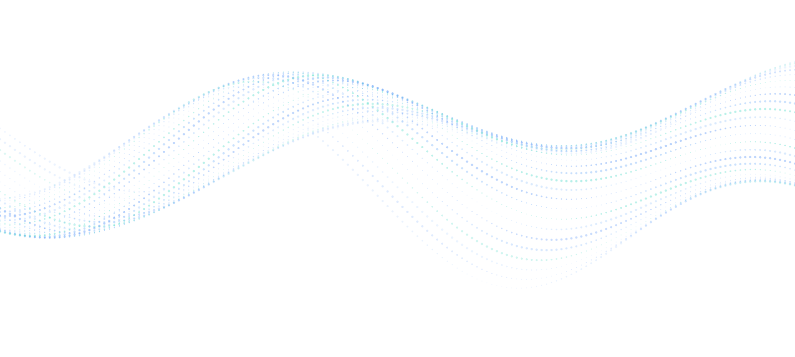

Back community projects with credits or compute. A neutral AI governor enforces each project's constitution, and every ruling is sealed on the Verafy chain.
Most new backers and swarm nodes in the last 7 days
Showing 8 of 132 example projects
Step-by-step tutor with a jury of models checking each step for errors.
Turns public meeting PDFs into searchable, cited summaries. Constitution bans ads.
Shared firmware for low cost oscilloscopes and loggers, tested in hardware-in-the-loop CI.
Browser app that visualizes fold predictions with sourced explanations.
Clean-room engine port with community art packs. Code of conduct requires original assets only.
Distributed search with every bound checked by an independent verifier model.
Reproducible downscaling pipelines with public datasets and audited benchmarks.
Shareable coding-rule packs that swarms and humans can enforce in CI.
Name it, link your Discord, Telegram or Signal, upload a spec and a GitHub repo.
Adopt a code of conduct and a constitution that governs the treasury.
Backers fund Stage 1, 2, 3. Money is released only when a stage is accepted.
Contributors run the swarm client. The governor enforces rules; judges hear appeals.